Part 1 · Fun with Filters
1.1: Convolutions from Scratch
Convolution computes a weighted sum of neighboring pixels. I implemented it first with four loops, then with two loops that multiply and sum an entire image patch using NumPy. Both flip the kernel horizontally and vertically.
(I * K)[i,j] = Σ K[u,v] I[i−u,j−v]. The minus signs explain the flip when indexing forward over a patch. Correlation uses an unflipped kernel. A symmetric box filter gives the same result either way, so asymmetric test kernels are needed to catch this error.
My photo and the three filters
I applied EXIF orientation and converted the 1152 × 1536 source photograph to grayscale, then resized it proportionally to 288 × 384. Float intensities lie in [0,1]. The original file is unchanged. The box kernel is np.ones((9, 9)) / 81; the assignment’s difference operators are Dx = [[1, 0, −1]] and Dy = Dx.T. These results use my two-loop convolution.
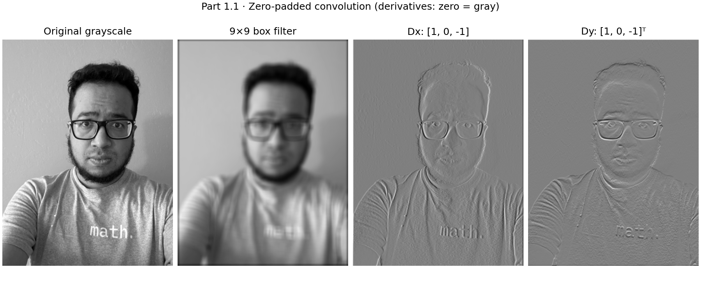
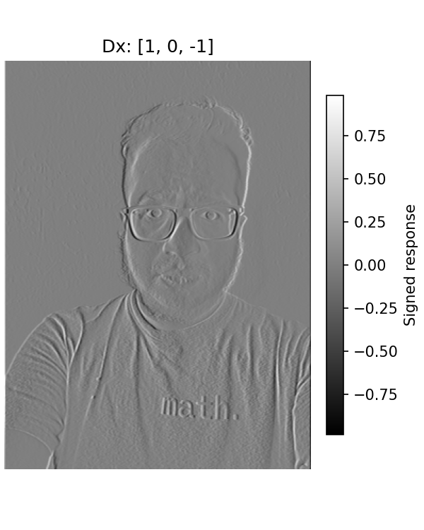
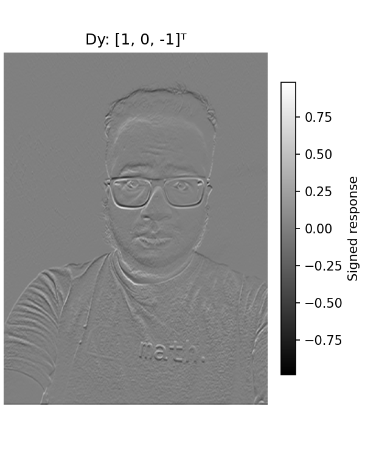
Original grayscale figure · Box-filter figure


Padding and correctness
Both functions explicitly pad with zeros and return the input shape. Outside the image is treated as black, explaining the dark rim in the box-filter result and artificial derivative responses at the border. For even kernels the extra padded row/column goes on the top/left, matching SciPy’s same-mode alignment. The reference uses convolve2d(image, kernel, mode="same", boundary="fill", fillvalue=0).
The tiny image and kernel are both [[1,2],[3,4]]; the hand-computed answer is [[1,4],[6,20]]. Both functions match it. Each function passed nine cases, including odd, even, rectangular, asymmetric, and larger-than-image kernels, with np.allclose(rtol=1e-12, atol=1e-12). Maximum errors were 7.11 × 10⁻¹⁵ (four loops) and 2.66 × 10⁻¹⁵ (two loops). All three photo filters also matched SciPy; maximum box error was 1.44 × 10⁻¹⁵, and both derivative errors were zero.
Measured runtime
I used identical 384 × 288 float arrays and a 9 × 9 box kernel, with one warmup followed by three measured runs per implementation. Times include convolution allocation/padding and exclude loading, comparison, and plotting.
| Implementation | Median time |
|---|---|
| four loops | 1.671050 s |
| two loops | 0.496456 s |
| scipy | 0.007659 s |
The two-loop version was about 3.4 times faster than four loops on this run. SciPy was about 64.8 times faster than two loops. NumPy handles each patch operation in compiled code, but the two output-pixel loops still run in Python; SciPy avoids that overhead. These are measurements on this machine, not universal speed ratios.
Implementation
The convolution functions use NumPy only. SciPy is used separately for comparison.
def convolve_four_loops(image, kernel):
image = np.asarray(image, dtype=float)
kernel = np.asarray(kernel, dtype=float)
height, width = image.shape
kh, kw = kernel.shape
padded = np.pad(image, ((kh // 2, (kh - 1) // 2),
(kw // 2, (kw - 1) // 2)), mode="constant")
flipped = kernel[::-1, ::-1]
result = np.zeros((height, width), dtype=float)
for row in range(height):
for col in range(width):
for u in range(kh):
for v in range(kw):
result[row, col] += padded[row + u, col + v] * flipped[u, v]
return result
def convolve_two_loops(image, kernel):
image = np.asarray(image, dtype=float)
kernel = np.asarray(kernel, dtype=float)
height, width = image.shape
kh, kw = kernel.shape
padded = np.pad(image, ((kh // 2, (kh - 1) // 2),
(kw // 2, (kw - 1) // 2)), mode="constant")
flipped = kernel[::-1, ::-1]
result = np.zeros((height, width), dtype=float)
for row in range(height):
for col in range(width):
patch = padded[row:row + kh, col:col + kw]
result[row, col] = np.sum(patch * flipped)
return result
Key ideas
- Convolution flips the kernel; correlation does not.
- Zero padding affects border pixels even when interior values are correct.
- A box filter averages; difference filters measure directional brightness changes.
- Derivative signs matter, and display scaling must preserve the underlying data.
- Numerical correctness and runtime are separate questions.
Implementation notes
- The padding widths and
kernel[::-1, ::-1]. - The four nested loops versus
np.sum(patch * flipped). - The tiny hand-computed answer and
np.allclosechecks. - The normalized box filter and the two derivative kernels.
- The warmup,
perf_counter, and median of three measurements.
Boundary-handling lesson
The most important idea from this section is that boundary handling is part of the operation. Matching a kernel alone is not enough to match another implementation’s output. The asymmetric test also catches a missing flip that a symmetric box filter would hide.
Part 1 · Finite differences
1.2: Finding Edges
The course archive cameraman image is stored as images/input/cameraman.png (542 × 540, height × width). The old Berkeley link redirects to HTML. I converted the image to grayscale float64 in [0,1] before filtering.

These sections use Dx = [[1, −1]] and Dy = Dx.T, as requested. Part 1.1 retains its three-tap filters. With convolution, the new filters compute current minus previous column or row. Dx measures change across vertical boundaries; Dy measures change across horizontal boundaries. sqrt(dx**2 + dy**2) gives gradient magnitude. All convolutions use zero padding and same-sized output.
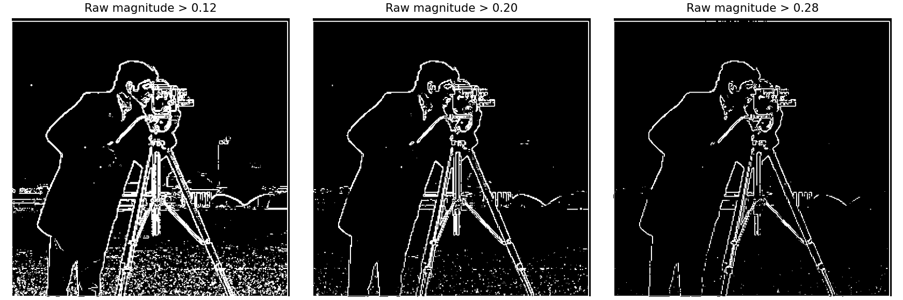
I selected 0.16 after inspecting these outputs. At 0.08, grass texture produces many edge pixels. At 0.24, the coat and tripod outlines are more fragmented. The middle value removes much of the texture while preserving the main silhouette, camera, and tripod; some ground texture remains.
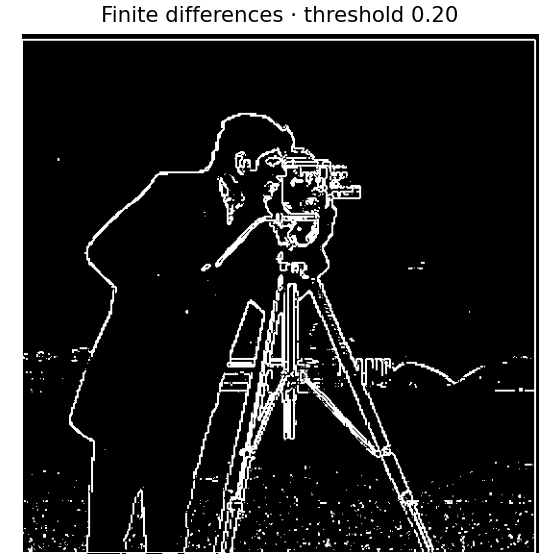
Key ideas
- Finite differences approximate image derivatives.
- Gradient components describe change in two directions.
- Magnitude measures total edge strength.
- Thresholding makes a Boolean edge map and trades texture suppression against weak-edge retention.
Implementation notes
Dx, Dy, filter_image, np.sqrt(dx**2 + dy**2), and raw_magnitude > raw_threshold.
Part 1 · Smoothing and differentiation
1.3: Derivative of Gaussian
I used a 9×9 Gaussian, σ = 1.5 pixels. cv2.getGaussianKernel(9, 1.5) and an outer product construct the normalized 2D kernel (sum ≈ 1). Smoothing reduces rapid variations before differentiation, including both noise and useful fine detail.
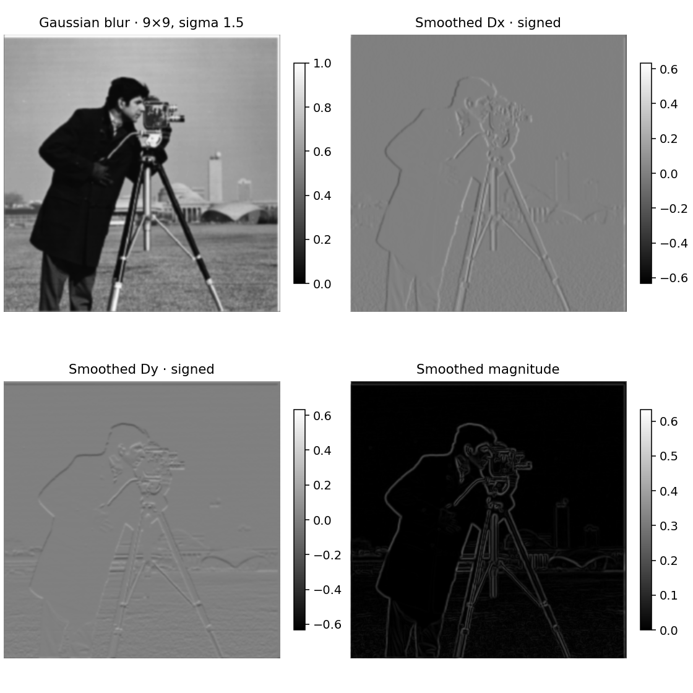
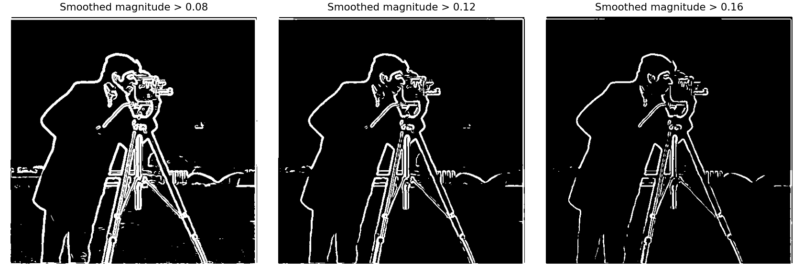
At 0.03, more ground texture and background structure remain. At 0.09, there are extra gaps in the head, coat, and tripod boundaries. I selected 0.06 to keep the main outlines with little grass response. Relative to raw differences, the retained edges are smoother and thicker; small details in the camera merge or disappear. The different thresholds account for the lower gradient peaks after smoothing.
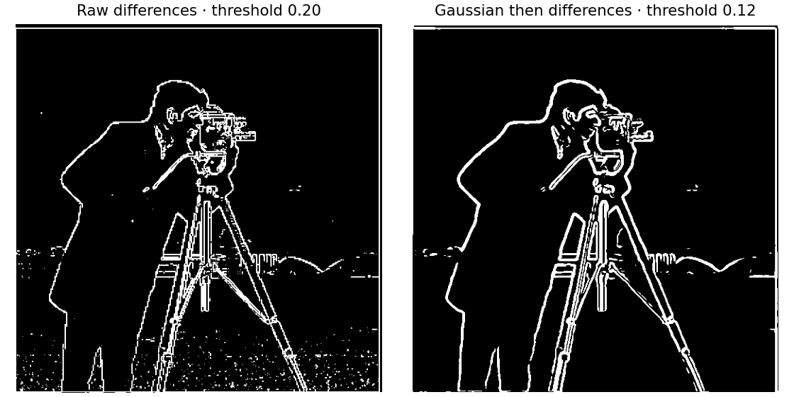
Combining the filters
dog_x = convolve2d(gaussian_kernel, Dx, mode="full"), with the analogous expression for y, retains all coefficients. The 9×10 and 10×9 kernels have positive and negative lobes and sum to approximately zero.
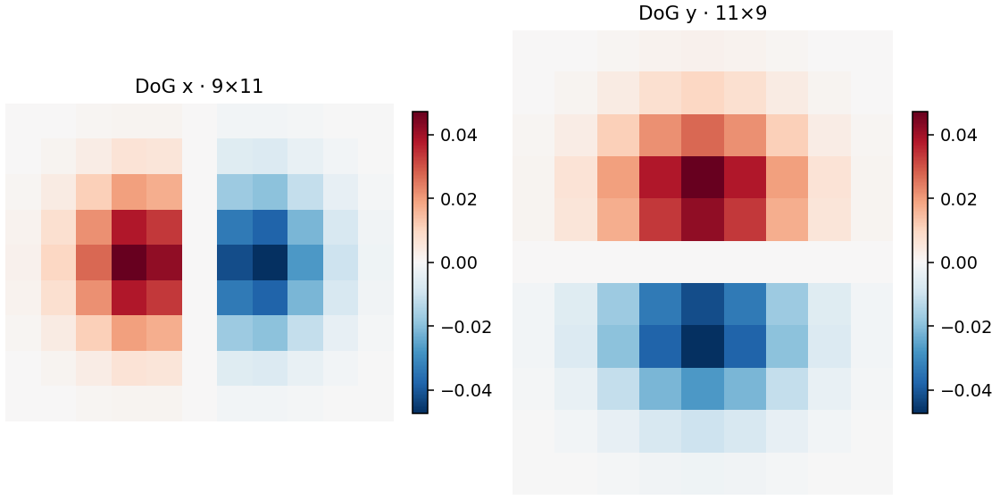
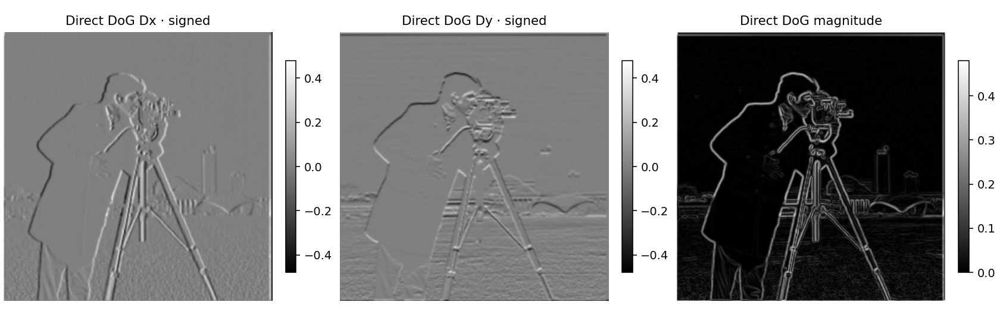
Associativity gives (image * Gaussian) * derivative = image * (Gaussian * derivative) for full convolution. Cropping the intermediate blur to the original dimensions loses values needed outside that crop. Zero-padding it again creates a boundary discrepancy. The interior should still agree; preserving full support and cropping once at the end should agree everywhere.
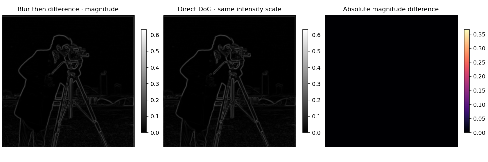
| Response / comparison | Max absolute difference | Mean absolute difference | allclose |
|---|---|---|---|
| dx / whole image | 0.364124 | 0.00055408 | False |
| dx / interior | 8.46545e-16 | 9.34857e-17 | True |
| dx / full then crop | 8.46545e-16 | 9.29944e-17 | True |
| dy / whole image | 0.36672 | 0.000675174 | False |
| dy / interior | 8.09249e-16 | 9.88551e-17 | True |
| dy / full then crop | 8.09249e-16 | 9.85687e-17 | True |
| magnitude / whole image | 0.36672 | 0.00122838 | False |
| magnitude / interior | 1.02696e-15 | 9.82873e-17 | True |
The interior excludes five pixels on every side. Comparisons use rtol=1e-10, atol=1e-12. The two same-mode pipelines are not equal across the whole image. Interior and full-support comparisons pass within floating-point precision.
Key ideas
- Gaussian smoothing suppresses high-frequency noise and fine texture.
- Smoothing gives broader, lower-peaked derivative responses.
- DoG combines smoothing and differentiation in one kernel.
- Convolution associativity explains the equivalence.
- Intermediate cropping can break boundary equivalence.
Implementation notes
cv2.getGaussianKernel, np.outer, full convolution for dog_x/dog_y, difference_stats, the interior crop, and the full-support comparison.
Mandatory CS280A
Gradient orientation
The gradient vector points toward the strongest local intensity increase. Its length is edge strength; its direction is perpendicular to the local visible edge tangent, rather than along that edge.
I use smoothed derivatives and angles in [0, 2π). Image coordinates have x right and y down, so angles increase clockwise: 0 right, π/2 down, π left, and 3π/2 up.
The code computes one-argument arctangent only where |dx| > 1e-12, corrects both negative-dx quadrants, and assigns vertical directions explicitly from dy. Gradients of magnitude ≤ 1e-12 have undefined direction; their stored zero is a placeholder and they are masked. No built-in full-angle helper is used.
def manual_orientation(dx, dy, epsilon=1e-12):
orientation = np.zeros_like(dx, dtype=float)
nonvertical = np.abs(dx) > epsilon
orientation[nonvertical] = np.arctan(dy[nonvertical] / dx[nonvertical])
upper_left = nonvertical & (dx < 0) & (dy >= 0)
lower_left = nonvertical & (dx < 0) & (dy < 0)
orientation[upper_left] += np.pi
orientation[lower_left] -= np.pi
vertical = ~nonvertical
orientation[vertical & (dy > epsilon)] = np.pi / 2
orientation[vertical & (dy < -epsilon)] = -np.pi / 2
orientation = orientation % (2 * np.pi)
zero_gradient = np.sqrt(dx**2 + dy**2) <= epsilon
orientation[zero_gradient] = 0.0
return orientation
Hue = angle/(2π), saturation = 1, and value = clip(magnitude/0.15, 0, 1). Pixels with magnitude ≤ 0.06 and the outer five pixels are black. Black means masked, not orientation zero. The value cap is only a display scale.
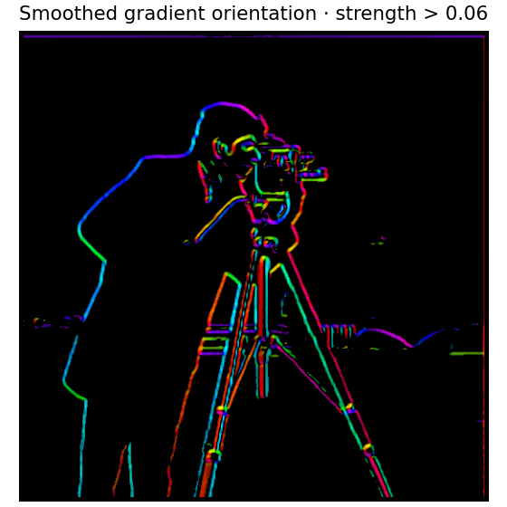
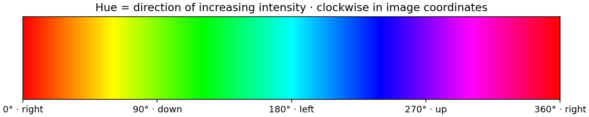
Validation passed 12 explicit axis/quadrant/zero/near-zero cases and 721 directions generated from known sine/cosine values. Maximum circular error was 4.44 × 10⁻¹⁶ radians. Checks also confirm finite values, the stated angle range, and black pixels wherever the mask is false.
Key ideas
- Dx and Dy form a two-dimensional gradient vector.
- One-argument arctangent needs explicit quadrant correction.
- Vertical and zero gradients require special handling.
- The angle convention follows image coordinates, so positive angles appear clockwise.
- Orientation is cyclic and normal to the local visible edge.
Implementation notes
manual_orientation, division mask, negative-dx corrections, vertical branches, modulo 2π, known-angle tests, orientation_mask, and HSV hue/value construction.
What I learned from Part 1
Differentiation exposes both boundaries and fine texture. Smoothing makes the main boundaries easier to isolate, while sacrificing small details. The numerical comparison also shows that an algebraic equivalence needs matching boundary handling: an intermediate crop changes the operation near the image edge.
Part 2 · Fun with Frequencies
2.1: Image Sharpening
Gaussian blur is a low-pass filter: it keeps broad color and intensity structure while reducing rapid changes. Subtracting it from the original leaves a signed residual containing edges and fine texture. Adding a scaled copy back increases local contrast and makes details appear sharper.
blurred = filter_rgb(original, gaussian)
high_freq = original - blurred
sharpened = original + alpha * high_freqThe equivalent single filter is K = (1 + alpha) delta − alpha G, because I + alpha(I − I*G) = I*((1 + alpha)delta − alpha G). Delta is a centered impulse; G is the normalized Gaussian. K sums to one and preserves constant regions. The notebook applies this kernel and compares it against the explicit steps.
For sharpening, I used a 9×9 Gaussian, sigma = 1.5 pixels, constructed with cv2.getGaussianKernel and an outer product. Each RGB channel is filtered independently with symmetric boundary extension. All calculations use float64; only display copies are clipped to [0,1].
Taj Mahal and alpha exploration
The official Taj Mahal image is stored in images/input/taj.jpg and used at its native 300×300 resolution. I tested alpha = 0.5, 1, and 2.

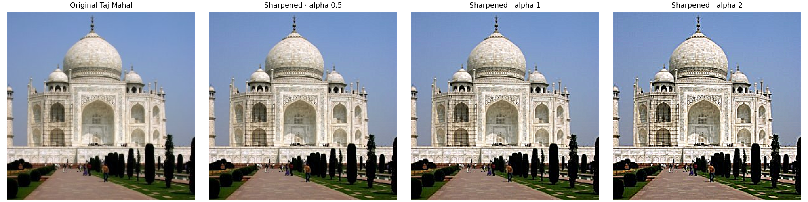
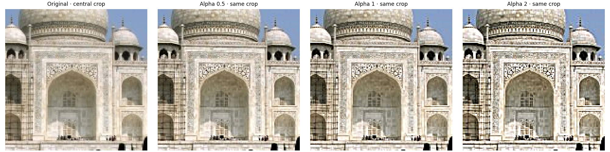
After inspecting these outputs, I prefer alpha = 1. Alpha 0.5 gives a mild contrast increase; alpha 1 makes the decorative patterns clearer. At alpha 2, architectural bands become harsh, bright/dark edging is more noticeable, and pixel-level texture is emphasized. Before clipping for display, 4.77%, 7.55%, and 12.64% of RGB channel values fall outside [0,1] for the three strengths.
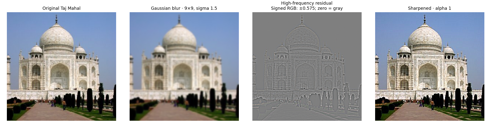
Additional image: my existing portrait
I used the existing my images/input/me.jpg, applied EXIF orientation, and resized it proportionally from 1152×1536 to 480×640 before filtering. Parameters: 9×9 Gaussian, sigma 1.5, alpha 1. This uses the same setting as the preferred Taj Mahal result, rather than claiming a separate portrait parameter search.
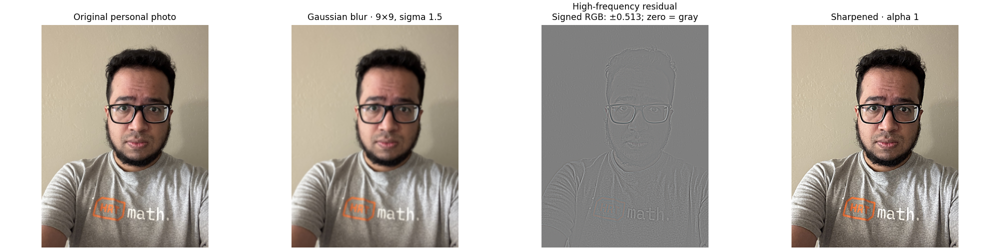
The glasses, beard, shirt lettering, and wall texture stand out more. Broad skin and wall colors are near neutral gray in the residual; most visible residual structure follows edges and texture. Sharpening also emphasizes background texture that may not be desirable.
Blur, then re-sharpen
The portrait at its 480×640 working resolution is the preserved sharp reference. I deliberately blurred it with a 13×13 Gaussian, sigma 2, then sharpened that blurred image using the 9×9 Gaussian, sigma 1.5, alpha 1. The high-frequency residual for this step is computed from the blurred image, not from the reference.
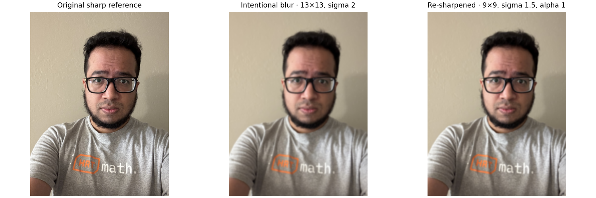
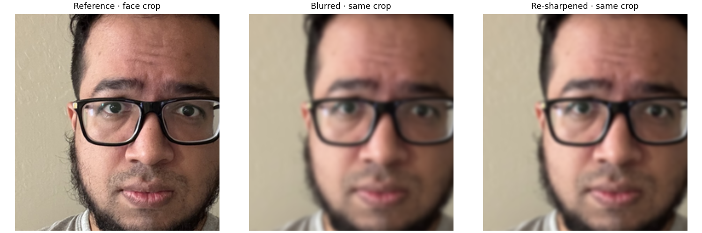
The re-sharpened image has stronger contrast than the blurred version, but fine detail remains visibly softer than the original. MSE relative to the reference falls from 0.00164242 after blur to 0.00127803 after re-sharpening, measured on unclipped RGB floats. This is an improvement, not a reconstruction: unsharp masking boosts surviving structure and does not invert the original blur.
Verification
All new code ran sequentially in a fresh process. The explicit pipeline and single unsharp kernel passed np.allclose(rtol=1e-10, atol=1e-12) for both images and all three alpha values; the largest difference was 2.33×10⁻¹⁵. Checks cover float ranges, finite values, dimensions, separate RGB channels, constant-image boundary behavior, signed residuals, and linear growth of the added residual with alpha. I visually checked all six figures.
Key ideas
- Low frequencies represent broad, slowly varying structure.
- High frequencies include boundaries, fine texture, and noise.
- Gaussian averaging attenuates rapid spatial changes.
- Original minus blur produces a signed high-frequency residual.
- Alpha controls the residual's contribution and can produce overshoot or halos.
- Unsharp masking enhances surviving detail; it does not reconstruct detail removed by blur.
Implementation notes
gaussian_kernelandfilter_rgb: Gaussian construction, separate RGB channels, symmetric boundaries.high_freq = original - blurred: signed float residual.original + alpha * high_freqand(1 + alpha) * impulse - alpha * gaussian: two equivalent formulations.plot_sharpening: centered signed display and clipping only display copies.- The evaluation computes its residual from the already blurred image.
Part 2 · Hybrid Images
2.2: Two Images, Two Viewing Distances
All three required hybrids are complete. Derek + Nutmeg retains the detailed Fourier analysis and mandatory CS280A color exploration. The two custom examples below complete Part 2.2.
A hybrid adds broad structure from one image to fine detail from another. Gaussian low-pass filtering gives the smooth component; subtracting a Gaussian blur from the other source gives its signed high-frequency component. Nearby, those fine details are visible; reducing the size or viewing from farther away makes the smooth source easier to recognize.
low_freq = gaussian_blur(low_image, sigma_low)
high_freq = high_image - gaussian_blur(high_image, sigma_high)
hybrid = low_freq + high_freqSources and alignment
Derek supplies low frequencies; Nutmeg supplies high frequencies. I obtained the original photos from Derek Hoiem’s original course assignment, credited by Berkeley, using its starter archive. The unchanged files are images/input/DerekPicture.jpg and images/input/nutmeg.jpg. Alignment/filtering code is implemented in the notebook.
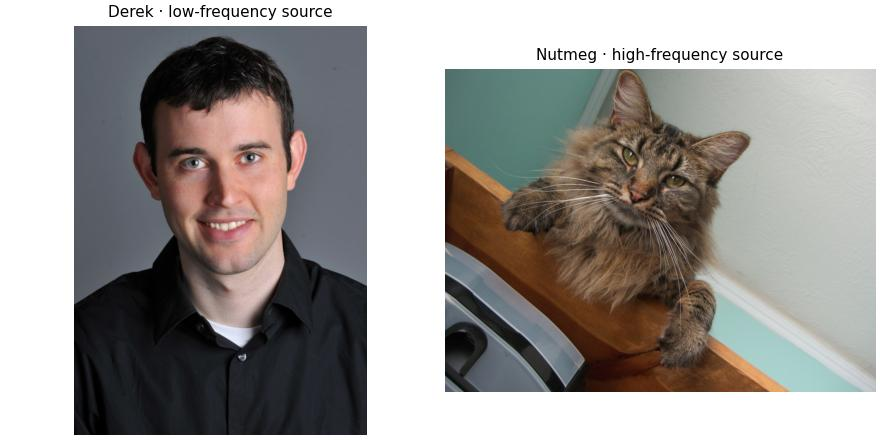
I selected approximate eye centers in original pixel coordinates: Derek (300,344), (440,331); Nutmeg (602,288), (754,366). A two-point similarity transform uses uniform scale, rotation, and translation to map both eye pairs to (205,230), (305,230) on a 512×512 head-centered canvas. Bilinear resampling is used. This framing retains the heads but omits some torso; the full originals remain above.
The canvas extends outside the original image for about 1.95% of Derek’s pixels and 7.98% of Nutmeg’s pixels, filled by edge replication. The Gaussian filters separately use reflected boundaries. Eye alignment does not make the different nose/mouth shapes match exactly.
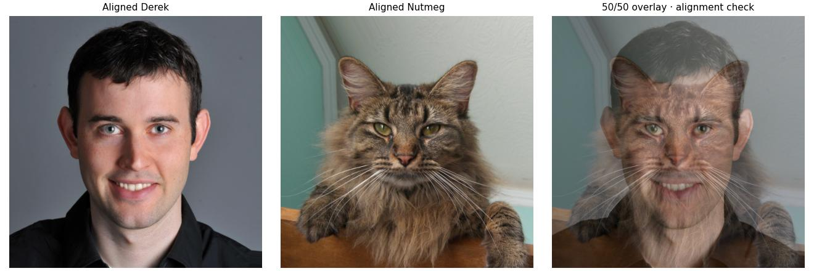
Choosing the frequency split
Tested (sigma_low, sigma_high) in pixels: (3,1), (6,2), (9,3), (12,4), (6,4), (9,2). I inspected normal and reduced views before choosing (9,3). Each Gaussian extends approximately three sigma from its center; selected kernel sizes are 55 and 19. The same normalized filter is applied separately to each channel.
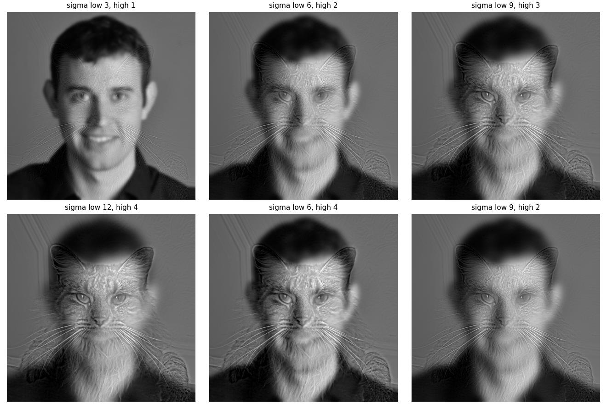
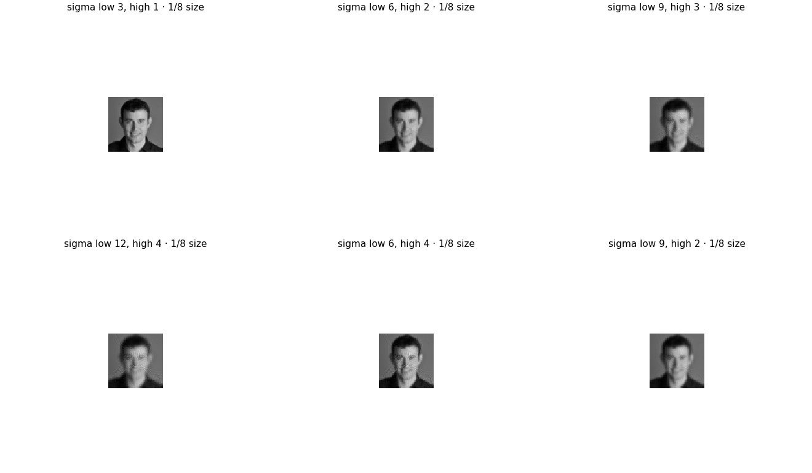
At (3,1), Derek remains prominent at normal size. At (9,3), Nutmeg’s eyes and fur are clear near, while Derek dominates the reduced view. At (12,4), the near cat is stronger but the reduced human face is softer and more contaminated by broad cat structure. At (6,4), overlapping face structure is more apparent. Some ghosting remains because the faces differ geometrically.
Sigmas are the actual cutoff controls. A Gaussian has gradual roll-off, not a hard cutoff; its continuous half-amplitude frequency is sqrt(log(2))/(sqrt(2)*pi*sigma). The selected low-pass Gaussian reaches half amplitude at about 0.02082 cycles/pixel; the Gaussian subtracted for the high-pass component does so at 0.06246 cycles/pixel.
Detailed process and Fourier analysis
Derek + Nutmeg is my detailed hybrid example. The grayscale calculation is shown below. Negative residuals are preserved; only their display copy is centered around gray.
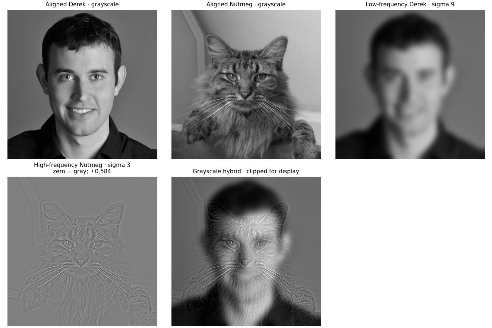
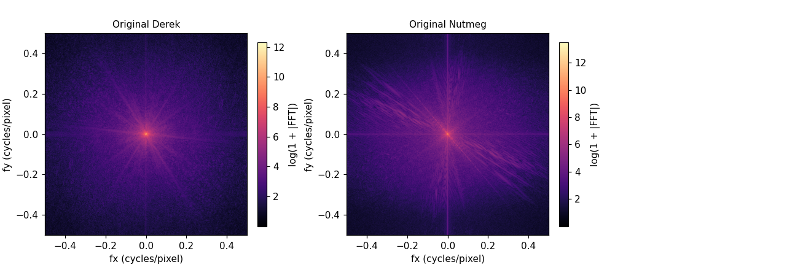
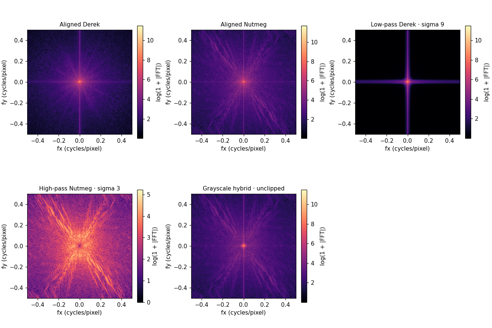
The FFT is computed as log1p(abs(fftshift(fft2(gray_image)))); log1p safely handles zero. Spectra use the full signed numerical data. Each panel has its own full finite display range and labeled colorbar, so brightness across panels is not directly comparable. No percentile clipping or per-image spectrum normalization is used.
The low-pass spectrum concentrates around the center, with most off-axis high-frequency content reduced. Its cross-shaped streaks partly reflect nonperiodic image boundaries. The high-pass spectrum has much lower amplitude and nearly zero DC (1.68×10⁻¹¹), but not an empty central disk: Gaussian roll-off is gradual. The hybrid retains central low-frequency content together with broader high-frequency structure.
Mandatory CS280A: where should color go?
I tested both grayscale, only low-frequency color, only high-frequency color, and both color with the same sigmas. Grayscale uses 0.299R + 0.587G + 0.114B; equal-channel copies allow grayscale/color mixing. Gaussian filtering does not mix channels. Final clipping is for display only.
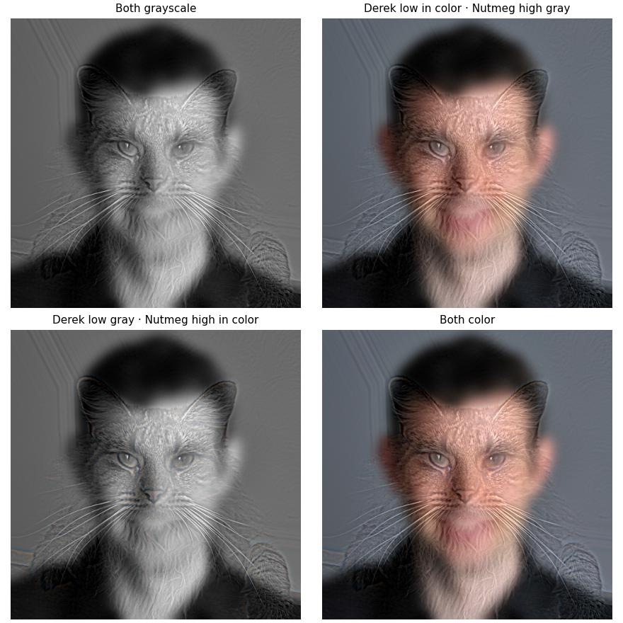
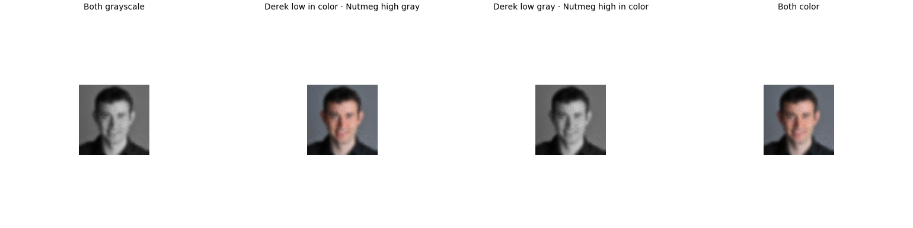
Preferred color allocation: Derek low in color, Nutmeg high in grayscale. At reduced size, skin and background colors reinforce Derek. Near, the cat’s eyes and whiskers remain clear, though the cat acquires an unnatural pink skin-color cast. Both-color is similar with subtle colored high-frequency detail; high-only color changes little at a distance. Both-gray gives a cleaner neutral cat near, so color is a tradeoff rather than an unconditional improvement.
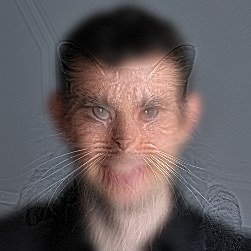
Custom examples
Both pairs use two corresponding eye centers to determine scale, rotation, and translation. Inputs are EXIF-oriented RGB float64 in [0,1], resized to at most 1024 pixels on the long side before alignment; landmark coordinates are scaled with the image. Bilinear alignment uses replicated borders. Filtering uses reflected boundaries and truncate=3. Both final custom hybrids use grayscale, with unit weights: low-pass image + (high image − its Gaussian blur). Signed residuals remain unclipped until display.
For each pair I compared (σ low, σ high) = (3,1), (6,2), (9,3), (12,4), (6,4), (9,2), (15,3), (18,2) at normal size and at 64 pixels high. Sigma is measured on the aligned canvas. Gaussian filters have gradual roll-offs, not hard frequency cutoffs.
Custom Pair 1: Two Portraits
Low source: hybrid_custom1_low.jpg. High source: hybrid_custom1_high.jpg. Selected σ low, σ high = (9, 3), grayscale.


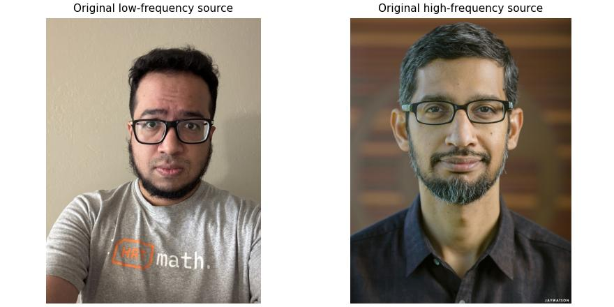
Native low eyes (560,577), (775,584) and high eyes (610,665), (964,663) map to (173,220), (273,220) on a 448×480 canvas (width×height). The canvas retains hair or ears; replicated margins are background padding, not new image content.
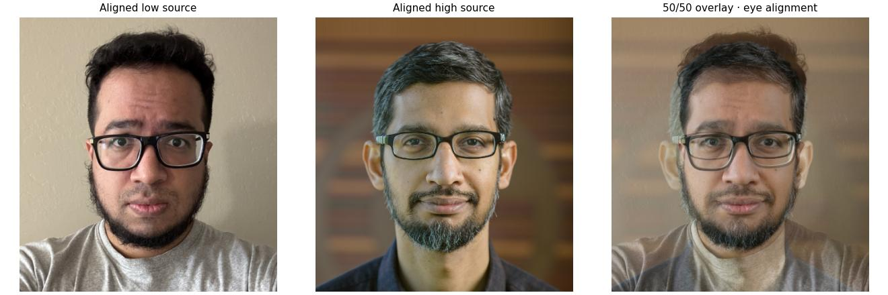
Eight parameter trials and reduced views
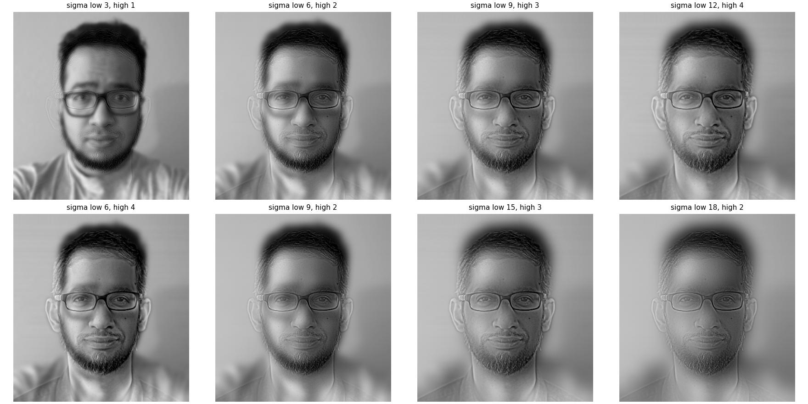
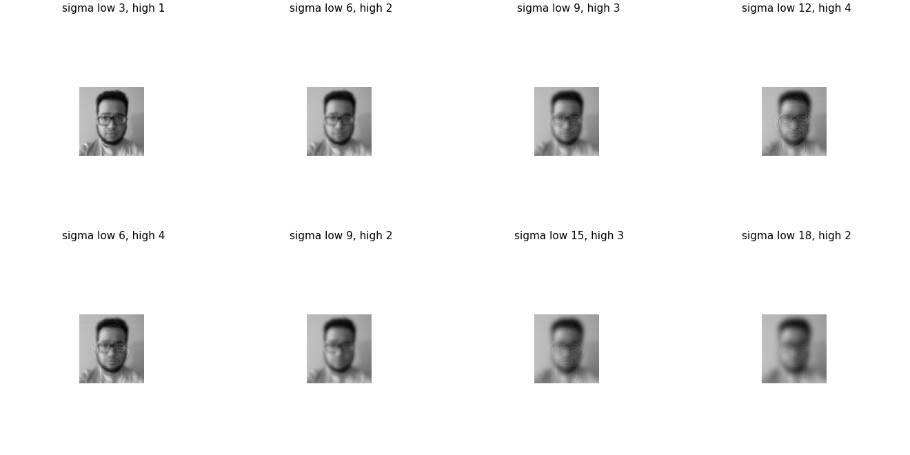
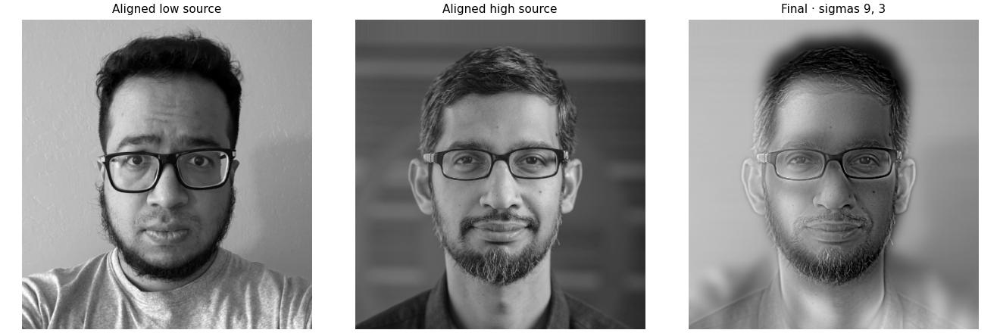
The high-source portrait’s fine glasses and facial details are visible nearby; the low-source portrait becomes more apparent in the reduced view. Some doubled glasses and hair remain. The (3,1) trial leaves too much low-source detail; (6,4) overlaps features more strongly, while larger low sigmas soften the distant portrait excessively.
Farther-view approximation, shown at its actual 60×64 pixel size:
Full-size final hybrid · Low/high frequency components · Recorded eye landmarks


Custom Pair 2: Tiger and Cat
Low source: tiger.jpg. High source: cat.jpg. Selected σ low, σ high = (12, 4), grayscale.


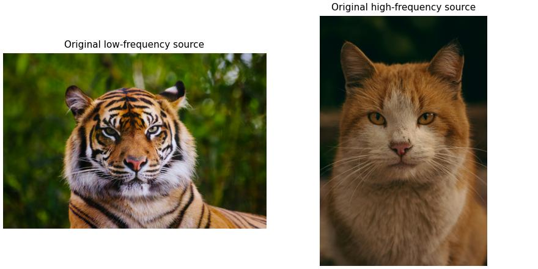
Native tiger eyes (2456,1765), (3416,1744) and cat eyes (1157,2049), (2167,2073) map to (132,240), (252,240) on a 384×512 canvas. The canvas retains hair or ears; replicated margins are background padding, not new image content.
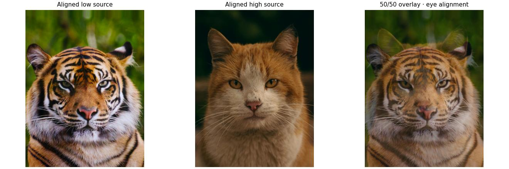
Eight parameter trials and reduced views
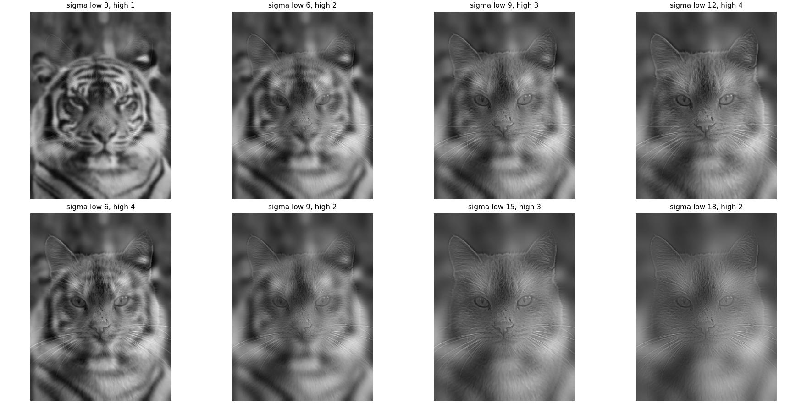
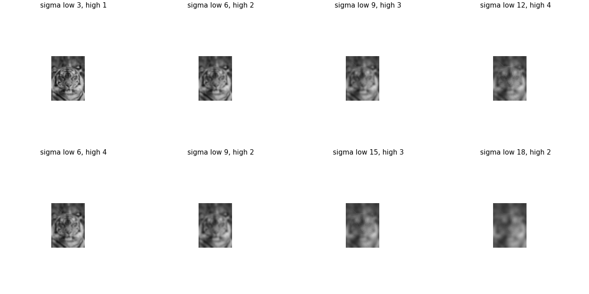
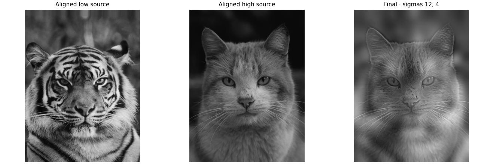
The domestic cat’s fine facial features are visible nearby, while the tiger’s broad markings become more apparent at reduced size. The switch is incomplete: tiger stripe shadows remain over the nearby cat. Smaller low sigmas retain too much tiger detail; (18,2) weakens the distant tiger too much. The selected (12,4) balances these cues.
Farther-view approximation, shown at its actual 48×64 pixel size:
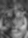
Full-size final hybrid · Low/high frequency components · Recorded eye landmarks


Eye alignment cannot fully match different face shapes, ears, hair, or lighting. Broad stripe patterns also survive low-pass filtering, explaining the tiger ghosts. Clipping affects about 0.632% of pair 1 pixels and one pair 2 pixel; numerical arrays retain the original float values.
Key ideas
- Low frequencies encode broad structure; high frequencies encode fine detail and edges.
- Gaussian blur and original-minus-blur select different frequency content.
- Alignment makes corresponding features occupy similar positions.
- Larger low-pass sigma removes more detail; larger subtraction sigma leaves more high-pass content.
- Viewing distance changes which spatial frequencies are visible.
- Fourier log magnitude shows frequency strength, not semantic identity or phase.
- Low-frequency color carries broad color cues; high-frequency color affects fine transitions.
Implementation notes
align_image, spatial-only gaussian_blur, the three lines in make_hybrid, RGB-weighted grayscale, fft_log_magnitude, four color allocations, prepare_custom_image and its landmark scaling, np.clip only on display copies, and the custom numerical checks.
Part 2 · Fun with Frequencies
2.3: Gaussian and Laplacian Stacks
A Gaussian stack stores progressively smoother versions of an image. A Laplacian stack stores differences between neighboring Gaussian levels, plus the final smooth residual. Every level here remains 300×300 RGB: these are stacks, with no downsampling.
The official apple and orange inputs were extracted unchanged from the course archive on the migrated Fall 2024 host. Sources: apple.jpeg and orange.jpeg.


Construction and parameters
I build six levels, G0 through G5. G0 is the original float64 RGB image in [0,1]. Repeated filtering uses step sigmas 1, 2, 4, 8, 16 pixels, reflected boundaries, and truncation at 3σ. The corresponding 1D kernel supports are 7, 13, 25, 49, 97 samples along each spatial axis. RGB channels are filtered independently. There is no resizing between levels.
Successive Gaussian variances approximately add, so the effective blur sigmas are 0, 1, 2.236, 4.583, 9.220, and 18.466 pixels. Each step sigma describes the additional filter, rather than the total blur. Increasing the step scale gives a wider range of spatial frequencies.
gaussian_stack = build_gaussian_stack(image, sigma_steps)
# Inside the loop: filter gaussian_stack[-1], keeping its dimensions.
laplacian_stack = build_laplacian_stack(gaussian_stack)
# L0 = G0 - G1, ..., L4 = G4 - G5, L5 = G5
reconstruction = laplacian_stack.sum(axis=0)Subtracting neighboring Gaussian levels removes their shared smooth content. The remainder is an approximate frequency band. Adding all differences and the final residual telescopes back to G0.
Apple and orange stacks
Top rows show Gaussian levels; bottom rows show Laplacian levels. Signed bands use 0.5 + band / (2 × max(abs(band))) for display only, so zero is gray and both positive and negative values remain visible. Each overview panel labels its symmetric range. Independent panel scaling makes small responses visible but prevents direct comparison of their apparent contrast. The final residual uses ordinary [0,1] display. All numerical arrays remain unchanged.
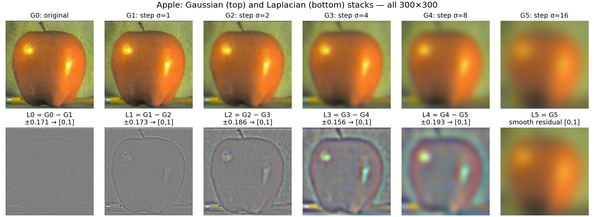
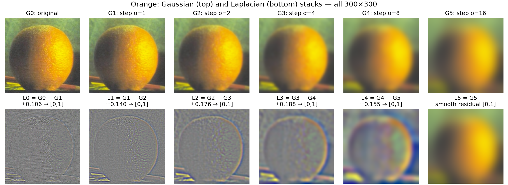
Figure 3.42-style frequency comparison
The assignment reference orders bands from levels 0, 2, and 4 vertically. Here, the apple and orange columns follow that order, then show the smooth residual and reconstructed sources. Each signed row shares one symmetric display scale across both sources.

These unmasked source stacks explain the frequency decomposition. The weighted contributions and final reconstruction appear in Part 2.4.
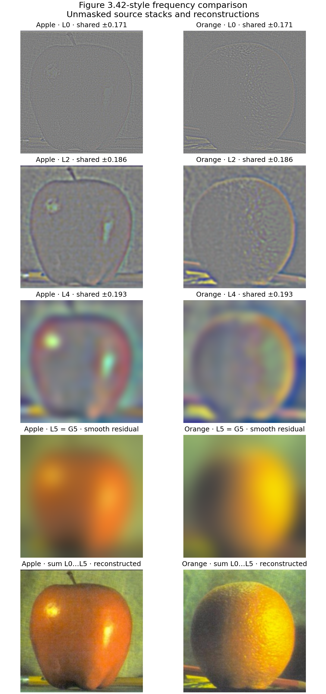
The first Gaussian levels suppress fine surface texture and the fine horizontal pattern in the source images. At later levels, the apple’s stem and the orange’s peel texture fade, while the large silhouette, shadows, and highlights remain. L0 contains thin edges and fine texture; L2 shows wider outlines and surface detail; L4 emphasizes broad transitions and the apple’s two highlights. The smooth L5 residual keeps the main red/yellow color regions. Summing all six Laplacian levels restores the original detail.
Reconstruction verification
Errors compare unclipped float64 reconstructions with the original inputs. np.allclose uses rtol=1e-12, atol=1e-12.
| Source | Maximum absolute error | Mean absolute error | allclose |
|---|---|---|---|
| Apple | 1.110223025e-16 | 8.100516143e-20 | True |
| Orange | 2.775557562e-17 | 5.268419446e-20 | True |
Fresh execution passed same-shape, float64, finiteness, signed-band, display-range, reconstruction, and constant-channel checks. No uint8 arithmetic or downsampling occurs. I visually checked all three generated figures.
Key ideas
- A stack keeps the original sampling grid at every level; a pyramid reduces its dimensions.
- There is no downsampling here, so corresponding pixels stay directly aligned across levels.
- Gaussian levels retain increasingly smooth, low-frequency content.
- Subtracting neighboring Gaussian levels cancels their shared smooth content, leaving an approximate frequency band.
- The bands overlap; they are not disjoint hard frequency cutoffs.
- The adjacent differences telescope: (G0−G1)+…+(G4−G5)+G5 = G0. Omitting G5 would lose the smooth content.
- Signed Laplacian values need a centered display scale; clipping negatives would hide half of the response.
Implementation notes
In build_gaussian_stack, gaussian_filter(gaussian_stack[-1], ...) repeatedly filters the previous level. The RGB sigma tuple ends in zero to keep channels separate. build_laplacian_stack subtracts adjacent arrays and appends the final Gaussian residual. laplacian_stack.sum(axis=0) reconstructs the image. signed_display maps a signed band to 0.5 + band/(2×scale), using the maximum absolute value and a zero-band guard. Numerical arrays remain unchanged.
I used separate functions to build Gaussian stacks, build Laplacian stacks, and render figures. This keeps the CV operations easy to follow without needing a class.
Part 2 · Multiresolution Blending
2.4: Multiresolution Blending
Mandatory CS280A: RGB color blending
Apple + Orange: Oraple
I reuse the unchanged Part 2.3 Gaussian and Laplacian stack functions. Each image has six levels at 300×300 RGB. The mask has six 300×300 levels. Repeated blur uses step sigmas 1, 2, 4, 8, 16, supports 7, 13, 25, 49, 97, reflected boundaries, and truncate=3. There is no downsampling.
The original mask is 1 on columns 0-149 (apple, left) and 0 on columns 150-299 (orange, right). The seam lies between columns 149 and 150. Its Gaussian stack uses the same filtering schedule, so broad color changes blend across a wider region than fine details.
mask_level = mask_stack[level][..., None] # one weight for R, G, B
apple_part = mask_level * apple_laplacian[level]
orange_part = (1 - mask_level) * orange_laplacian[level]
combined_level = apple_part + orange_part
oraple = combined_levels.sum(axis=0)The naïve comparison is mask * apple + (1-mask) * orange with the original hard mask. All computations are float64; clipping and uint8 conversion apply only to display/saved copies.
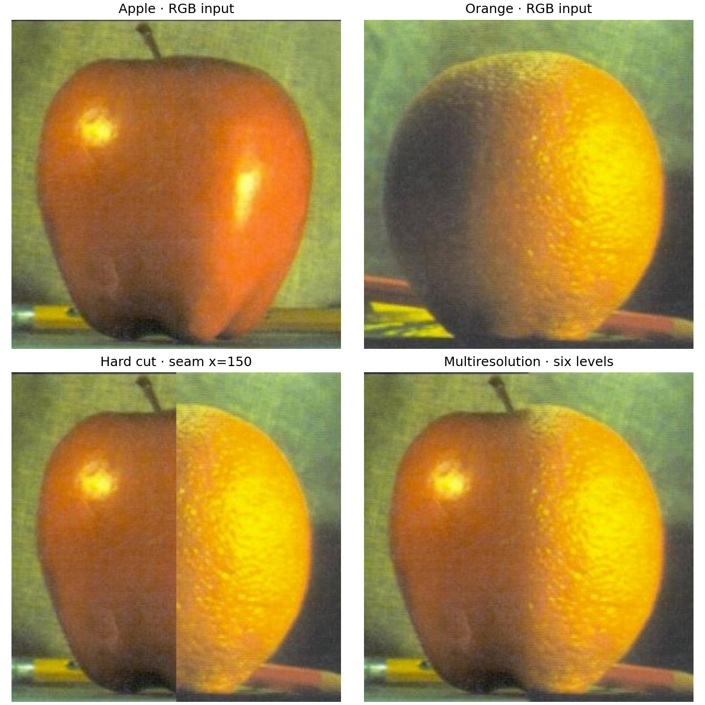
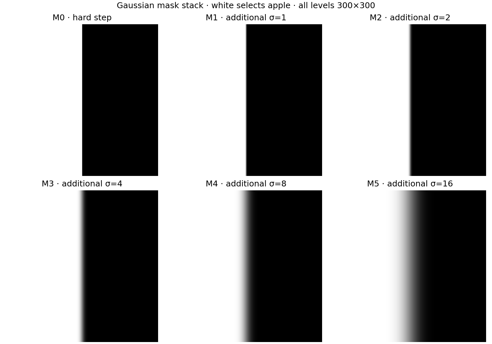
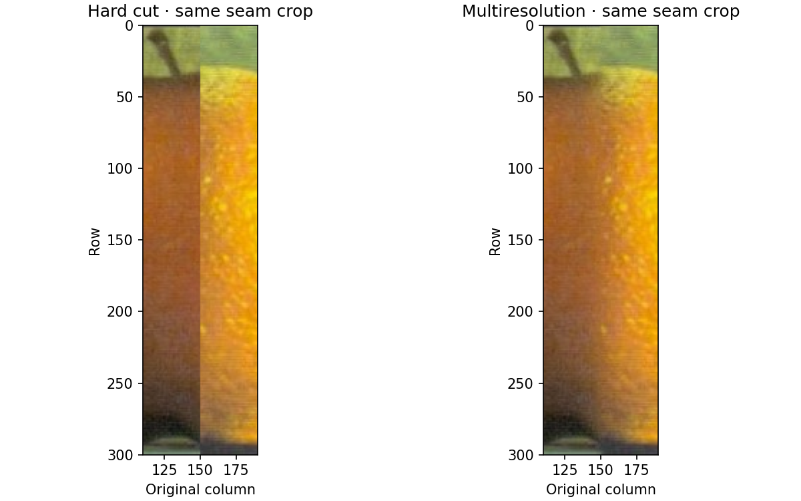
The hard cut has a straight, abrupt red-to-yellow boundary through the fruit and a visible jump in the background. Multiresolution blending spreads the broad color change across the seam while keeping the apple highlight and orange peel texture. It looks smoother, but the texture change remains visible and the two outlines still differ near the stem and lower edge. Blending does not geometrically align different silhouettes.
Final RGB Oraple · Hard-cut image · Original mask


Figure 3.42-style blending process
Rows show representative signed bands L0, L2, L4, the L5 smooth residual, and the reconstructed contributions. Columns show the apple band, masked apple, inverse-masked orange, and combined result. Signed panels share a symmetric scale within each row; zero is gray. Residual and reconstruction panels use [0,1]. Underlying signed values remain unchanged. The masked apple, masked orange, and combined panels at L0/L2/L4 correspond to Figure 3.42 (a-i); the final contribution sums and result correspond to (j-l). The extra column shows the unmasked apple, and the extra residual row makes reconstruction explicit.
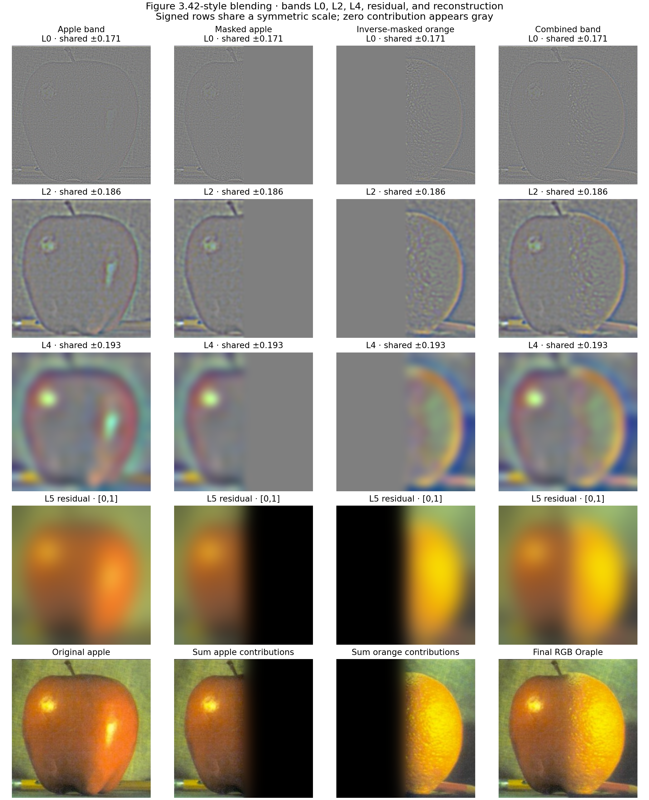
Verification
Fresh execution passed matching-shape, float64, finite-value, endpoint-mask, identical-source, complementary-mask, and independent-RGB-channel checks. Recomputed Part 2.3 arrays match their saved values exactly. The final result differs from the hard cut: mean absolute difference 0.0052417811; maximum 0.2133722751. I checked all seven output PNGs.
Gaussian-mask values stay in [0,1] to floating-point precision: the largest is 1.0000000000000007, within the 1e-12 verification tolerance. No intermediate clipping is used. The final raw RGB range is approximately [−1.39×10⁻¹⁶, 1.000000000030199]; display clipping only removes tiny numerical overshoots.
Key ideas
- Laplacian levels separate fine detail from broader variations; the final residual retains smooth color and shape.
- A Gaussian mask stack uses progressively wider transitions for coarser frequency bands. Repeated filtering broadens the mask without changing its dimensions.
- A hard cut switches every frequency at the same column, creating abrupt color and brightness changes.
- Summing all blended bands, including the residual, reconstructs the composite.
- Ordinary alpha blending applies one spatial weight to every frequency. Here each band uses its own mask scale.
- The same mask weight broadcasts to R, G, and B; spatial filtering never averages different channels together.
Implementation notes
make_step_mask sets the left half to 1. build_gaussian_stack(mask, sigma_steps) reuses the Part 2.3 filtering. mask_level[..., None] broadcasts a 2D mask across RGB. blend_laplacian_stacks retains both weighted contributions and their sum. combined.sum(axis=0) reconstructs the image. The hard cut uses the original mask on the original inputs. Only saved/display copies use np.clip; signed bands use a shared symmetric scale around gray.
Separate functions build stacks, create masks, combine levels, and save figures. The wrapper composes them; no class is needed.
Custom Blend 1: Tiger + Cat
A is tiger.jpg (left); B is cat.jpg (right). The existing two-eye similarity transform aligns scale, rotation, and translation after resizing the working images to at most 1024 pixels on the long side. Native eye points [(2456,1765),(3416,1744)] and [(1157,2049),(2167,2073)] map to [(132,240),(252,240)]. The final canvas is 384×512 (width×height). Bilinear warping uses replicated borders; original sources remain unchanged.
I tested vertical seams 176, 192, and 208. I selected column 176: mask=1 on 0-175 (tiger), 0 on 176-383 (cat), avoiding a central split through the nose. Both custom examples use six full-resolution RGB levels with unchanged step sigmas [1,2,4,8,16], kernel supports [7,13,25,49,97], reflect filtering and truncate=3.

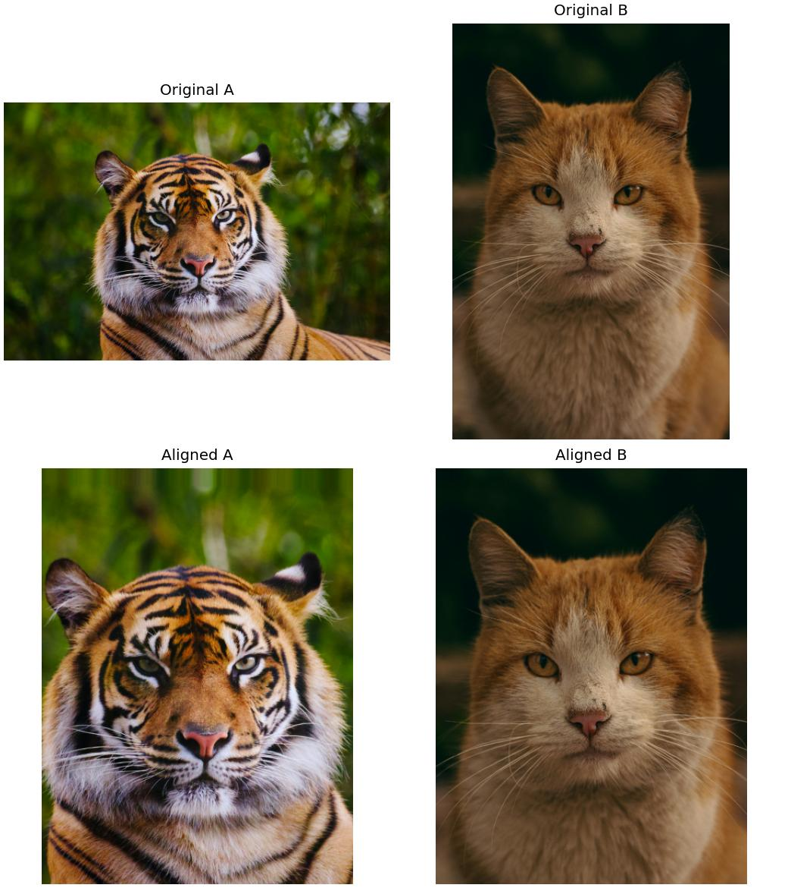

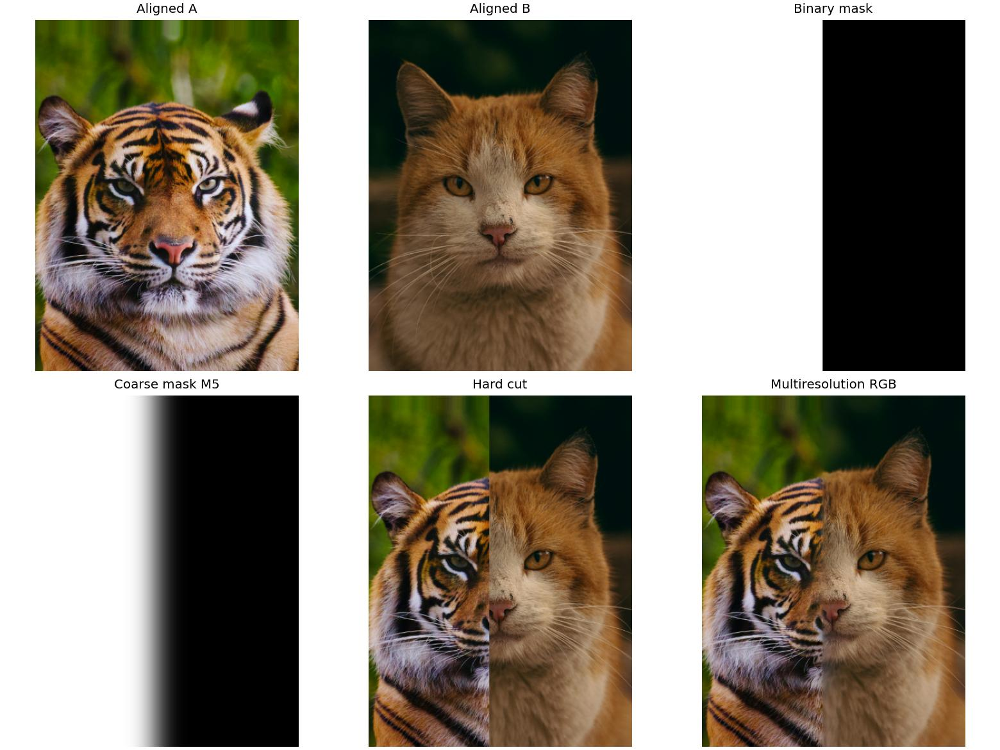
The selected seam softens the background and fur-color transition compared with the hard cut. The eyes occupy the same row, but the tiger has a longer muzzle: its half-mouth sits lower, and the nose/whisker transition remains visibly mismatched. The tiger and cat also have different ear heights. This is a recognizable split-face composite, not a seamless anatomical match.
Final tiger/cat blend · Three seam trials


Custom Blend 2: Portraits with an Irregular Mask
The first portrait, hybrid_custom1_low.jpg, supplies the inside; hybrid_custom1_high.jpg supplies the outside. These names describe their old hybrid roles; here both images contribute complete RGB frequency bands within their mask regions. Native eyes [(560,577),(775,584)] and [(610,665),(964,663)] map to [(173,220),(273,220)] on a 448×480 canvas, using the same preprocessing and similarity alignment.
The binary ellipse has center (223,255), horizontal radius 100 and vertical radius 120 pixels, measured from the upper-left. I compared radii (80,100) and (100,120), with both inside/outside orientations, and selected the larger ellipse with the first portrait inside.
mask = (((x - 223) / 100)**2 + ((y - 255) / 120)**2 <= 1).astype(float)The curved boundary satisfies the nonlinear/irregular-mask requirement. The same Gaussian-stack function smooths this mask; no segmentation model or special blending algorithm is used.

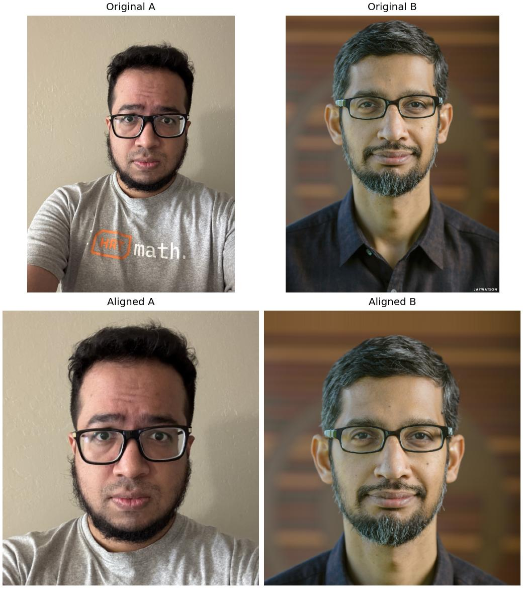

The curved forehead and cheek boundary is much less abrupt than the hard elliptical cut. The inside portrait keeps its eyes, nose, and mouth while the outside portrait supplies hair, beard edges, clothing, and background. The larger ellipse retains more of one glasses frame than the smaller trial. Frame joins near the temples, the beard boundary, and a warmer central skin tone remain visible; Gaussian blending cannot remove those geometric and lighting differences.
Final portrait blend · Four ellipse/orientation trials


Favorite custom result: portrait blending process
The ellipse shows local face replacement clearly. The rows show L0, L2, L4 and the final residual. Signed rows share a symmetric display scale; zero is gray. The underlying arrays retain negative values. The last row uses ordinary [0,1] display.

Key Ideas: Custom Blends
- The mask shape determines which source contributes at each location; one selects A and zero selects B.
- Gaussian mask levels broaden the transition for coarse bands while retaining narrower transitions for fine detail.
- An ellipse has a curved boundary defined by a quadratic equation, so it satisfies the nonlinear-mask requirement.
- Eye alignment helps corresponding features meet, but different muzzle lengths, glasses, and face proportions still create artifacts.
- Color and texture mismatch can remain because blending changes transitions rather than matching geometry or illumination.
- Ordinary alpha compositing uses a single mask at all frequencies; multiresolution blending uses a different mask scale per band.
Implementation notes
Understand make_step_mask, ((x-cx)/rx)**2 + ((y-cy)/ry)**2 <= 1 in make_ellipse_mask, the existing Gaussian mask stack, mask_level[..., None] for RGB, mask*laplacian_A + (1-mask)*laplacian_B, summation including the residual, and clipping only display copies. The ellipse helper creates the mask; the stack and blending functions handle filtering and reconstruction.
Fresh execution passed matching dimensions, floating-point/finiteness, mask bounds with 1e-12 roundoff tolerance, reconstruction, and independent RGB channel checks. No downsampling occurs within stacks. Ellipse row widths vary, confirming a curved region. I visually checked both final results and their supporting figures.
Most important thing I learned
The most important thing I learned is that the same Gaussian filtering idea connects all four applications. Smoothing made edges easier to isolate, subtracting the blur exposed detail for sharpening and hybrids, and repeating that decomposition let me blend different spatial scales. The experiments also showed the limits: sharpening did not recover lost detail, and a smoother blend did not fix mismatched faces. Choosing the scale, alignment, and boundary handling mattered as much as writing the filtering equation.